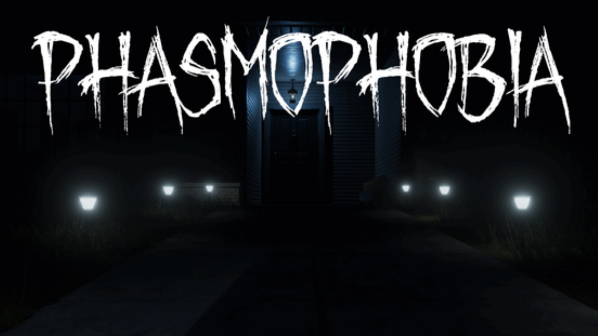

TOP 5 JOGOS QUE EU AMO:
| Classificação | Nome | Desenvolvedora | Data de Lançamento | Cópias Vendidas | Foto |
|---|---|---|---|---|---|
| 1º | Terraria | Re-Logic | 16 de maio de 2011 | 44,5 milhões |  |
| 2º | Don't Starve Together | Klei Entertainment | 15 de Dezembro de 2014 | Aproximadamente 10 milhões |  |
| 3º | Stardew Valley | CorcernedApe | 29 de Julho de 2016 | Mais de 20 Milhões |  |
| 4º | Metal Gear Rising: Revengeance | PlatinumGames | 19 de Fevereiro de 2013 | 59,5 milhões |  |
| 5º | Phasmophobia | Kinetic Games | 18 de Setembro de 2020 | Mais de 2 Milhões |  |